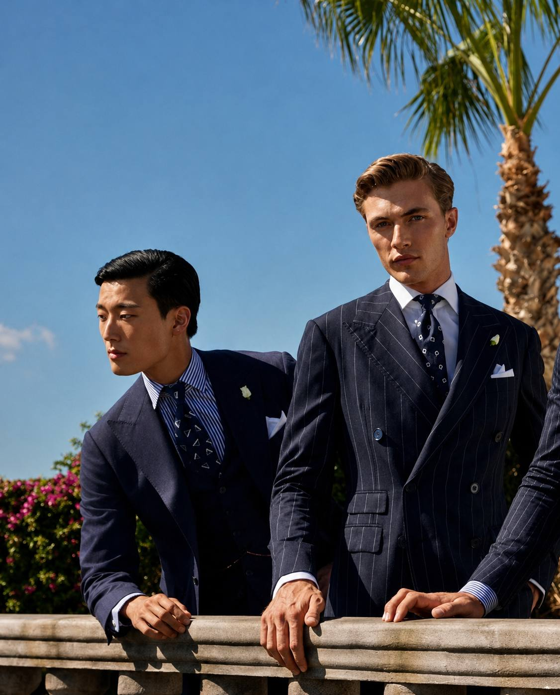

Форма как первое доказательство собранности.
Тело, посадка, одежда и уход складываются в присутствие, которое читается раньше любого знакомства.
Closed circle for rising men
Private Circle собирает молодых мужчин, для которых важны не только доход и результат, но и качество среды, внешний вид, культурная опора, вкус и манера держать себя в обществе.

Тело, посадка, одежда и уход складываются в присутствие, которое читается раньше любого знакомства.
Книги, разборы и разговоры, которые укрепляют масштаб мышления, а не создают иллюзию занятости.
Вино, крепкие напитки и коктейльная культура как часть зрелости, а не декоративного интереса.
Ближайший ритм
Камерный вечер для людей, которым близки деловая ясность, культурный вкус и спокойная точность в общении.
Разговор о предпринимательском мышлении, важных сигналах рынка и собственной деловой линии без суеты.
Вечер о вкусе как части статуса: что пить, как разбираться и как вести себя за столом без случайности.
Высокий круг строится не из лозунгов. Он возникает там, где форма, вкус, мышление и среда становятся привычкой.
Membership
Вход в клуб строится не на покупке, а на соответствии. Сначала заявка, затем личное подтверждение, и только после этого — вход в закрытый контур Private Circle.
Кратко обозначить свой вектор, мотивацию и причину, по которой тебе близка среда клуба.
Мы смотрим не на эффектность, а на потенциал, меру и органичность человека для общего круга.
После подтверждения открывается доступ в кабинет участника и во внутренний ритм клуба.